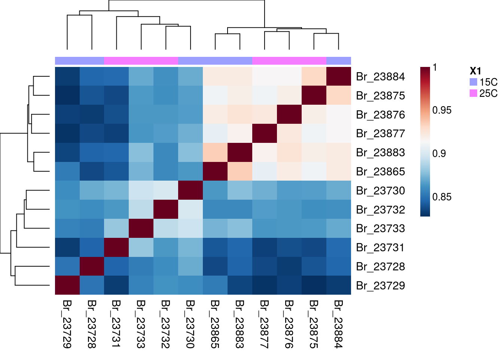
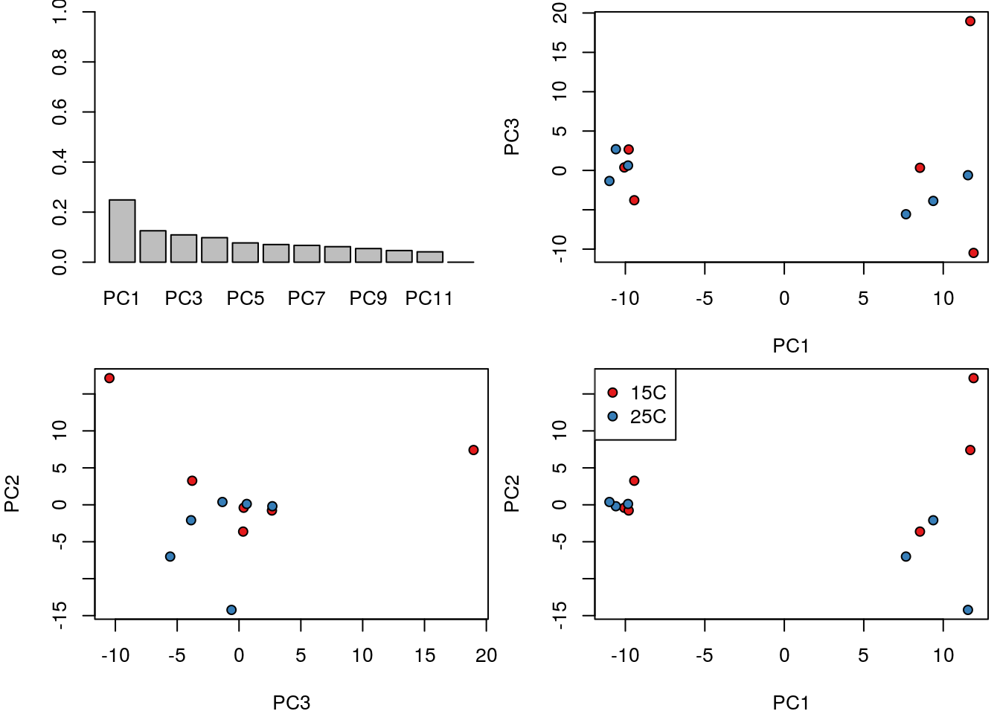

Для PCA можно использовать несколько вариантов: в базовом пакете это функция prcomp(), rda() из пакета vegan (Oksanen et al. 2018) и многие другие.
## Warning: Package 'prot2D' is deprecated and will be removed from
## Bioconductor version 3.9Построим тепловую карту коэффициентов корреляции между пробами при помощи функции aheatmap() из пакета NMF (Gaujoux and Seoighe 2010, 2018a, 2018b).

pca_pect <- prcomp(t(pecten_log))
PCA <- pca_pect$x
pal <- brewer.pal(9, "Set1")
cols <- pal[pecten.fac$Condition]
op <- par(mfrow = c(2, 2), mar = c(4, 4, 0.5, 0.5))
barplot(summary(pca_pect)$importance["Proportion of Variance", ], ylim = c(0, 1))
plot(PCA[, c(1, 3)], bg = cols, pch = 21, cex = 1, lwd = 1)
plot(PCA[, 3:2], bg = cols, pch = 21, cex = 1, lwd = 1)
plot(PCA, bg = cols, pch = 21, cex = 1, lwd = 1)
legend("topleft", legend = levels(pecten.fac$Condition), pt.bg = pal[1:2], pch = 21)
par(op)
Gaujoux, R., and C. Seoighe. 2010. A flexible r package for nonnegative matrix factorization. BMC Bioinformatics 11:367.
Gaujoux, R., and C. Seoighe. 2018a. Using the package nmf. CRAN.
Gaujoux, R., and C. Seoighe. 2018b. The package nmf: Manual pages. CRAN.
Oksanen, J., F. G. Blanchet, M. Friendly, R. Kindt, P. Legendre, D. McGlinn, P. R. Minchin, R. B. O’Hara, G. L. Simpson, P. Solymos, M. H. H. Stevens, E. Szoecs, and H. Wagner. 2018. Vegan: Community ecology package.